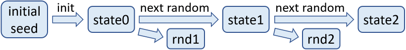
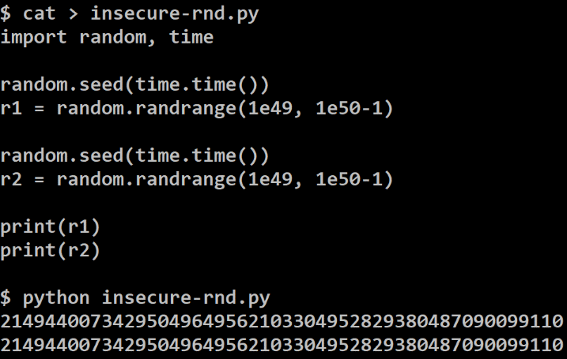

Secure Random Generators
Secure Random Number Generators, PRNG and CSPRNG
In cryptography the randomness (entropy) plays very important role. In many algorithms, we need random (i.e. unpredictable) numbers. If these numbers are not unpredictable, the algorithms will be compromised.
For example, assume we need a secret key, that will protect our financial assets. This secret key should be randomly generated in a way that nobody else should be able to generate or have the same key. If we generate the key from a secure random generator, the it will be unpredictable and the system will be secure. Therefore "secure random" means simply "unpredictable random".
Let's discuss in bigger detail the random numbers in computer science and their role in cryptography, as well as pseudo-random numbers generators (PRNG), secure pseudo-random generators (CSPRNG) and some guidelines about how developers should generate and use random numbers in their code.
Random Generators
In computer science random numbers usually come from a pseudo-random number generators (PRNG), initialized by some unpredictable initial randomness (entropy). In cryptography secure PRNGs are used, known as CSPRNG, which typically combined entropy with PRNG and other techniques to make the generated randomness unpredictable.
Pseudo-Random Number Generators (PRNG)
A pseudorandom number generator (PRNG) is used to stretch a small amount of initial randomness\ into a large amount of pseudorandomness, typically for use in cryptosystems. Note than PRNGs are not cryptographically secure and are different from CSPRNGs.
PRNGs are functions that start from some initial entropy (seed) and calculate the next random number by some calculation which is unpredictable without knowing the seed. Such calculations are called pseudo-random functions.

Pseudo-random functions (which are not secure for cryptography) usually use an internal state. At the start, the state is initialized by an initial seed. When the next random number is generated, it is calculated from the internal state (using some computation or formula), then the internal state of the pseudo-random function is changed (using some computation or formula). When the next random number is generated, it is again calculated based on the internal state of the function and this state is again changed and so on.
This process in its simplest form can be implemented as follows:
init(entropy):
state = entropy, counter = 0
netNum():
state = HMAC(state, ++counter)
return state
Of course, the HMAC function can be changed by some cryptographic hash function or another mathematical transformation like the Mersenne Twister (which is not cryptographically secure), but the main idea stays the same: pseudo-random generators have internal state, initialized with some initial randomness and over the time change their internal state and generate pseudo-random numbers, based on the current state.
Good random number generators should be fast and should generate statistical randomness (see the Diehard tests), i.e. all numbers should have the same chance to be generated over the time. This is not sufficient cryptography, so CSPRNG have higher requirements.
The above idea to generate random pseudo-numbers based on HMAC(key + counter), with some complications, is known as the HMAC_DRGB algorithm, described in the security standard NIST 800-90A.
Initial Entropy (Seed)
To be secure, a PRNG (which is statistically random) should start by a truly random initial seed, which is absolutely unpredictable. If the seed is predictable, it will generate predictable sequence of random numbers and the entire random generation process will be insecure. That's why having unpredictable randomness at the start (secure seed) is very important.
How to initialize the pseudo-random generator in a secure way? The answer is simple: collect randomness (entropy).
Entropy
In computer science "entropy" means unpredictable randomness, and is usually measured in bits. For example, if you move your computer's mouse, it will generate some hard-to-predict events, like the start location and the end location of the mouse cursor. If we assume that the mouse has changed its position in the range of [0...255] pixels, the entropy collected from this mouse movement should be about 8 bits (because 2^8 = 255). Another example: if the user is asked to think of a number in the range [0...1000], this number will hold about 9-10 bits of entropy (because 2^10 = 1024). To collect 256 bits of entropy (e.g. to securely generate a 256-bit integer), you will need to take into account a sequence of several such events (like mouse movements and keyboard interracions from the user).
Collecting Entropy
Entropy can be collected from many hard-to-predict events in the computer: keyboard clicks, mouse moves, network activity, camera activity, microphone activity and others, combined with the time at which they occur. This collection of initial randomness is usually performed internally by the operating system (OS), which provides standard API to access it (e.g. reading from the /dev/random file in Linux). In desktop system, laptop or mobile phone entropy is easy to collect, while on some limited hardware devices (such as simple microcontrollers) entropy is hard or impossible to be collected.
Application software can collect entropy explicitly, by asking the user to move the mouse, type something at the keyboard, say something at the microphone or move in front of the camera for a while. A great example of this is the bitaddress.org wallet app, which combines mouse moves with keyboard events to collect entropy:
Once enough entropy is collected, it is used to initialize the random generator.
Insecure Randomness
Insecure / compromised randomness can compromise cryptography. A good example to learn from is the story of the stolen Bitcoins, due to broken random generator in Android: https://goo.gl/PFE1kr. That's why developers should care about randomness, when they use cryptography and ensure their random generators are secure.
Insecure Randomness - Examples
As example how easy it is to compromise the random number security in Python (in its old versions), we shall give this code example:
import random
print(random.randrange(1000000, 9999999))
Run the above code example: https://repl.it/@nakov/Random-in-Python.
The above code is assumed to generate a random number, but this number may be predictable. This is because the random library in Python (in its old versions) initializes the random generator seed by the current time. Thus, if you know the current time at the machine generating the random number (obviously you know this roughly), you will be able to predict the random seed and to predict the random numbers generated.
To better illustrate this, look at this more explicit example which generates two random 50-digit integers:
import random, time
random.seed(time.time())
r1 = random.randrange(1e49, 1e50-1)
random.seed(time.time())
r2 = random.randrange(1e49, 1e50-1)
print(r1)
print(r2)
Run the above code example: https://repl.it/@nakov/Random-with-seed-in-Python.
The above code will print two equal numbers, both depending on the current time. It is obvious that the same time in the initial seed causes the same (predictable) pseudo-random numbers to be generated in the output. This is a sample output of the above code:
53285353661739398833155340591358345604323255820576
53285353661739398833155340591358345604323255820576
If you run this code through a debugger or in a slow environment, the produced numbers may be different, due to time change between the two random generation executions. Typically the Python interpreter at the interactive console produces two different numbers. To obtain the result, similar to the above, first save the code in a script file (e.g. insecure-rnd.py) and then execute the Python script file:

Basically, when the initial random seed is initialized with a predictable number like the current time, crackers can try all possibilities within the range of +/- 5 seconds and find the exact initial seed and then compromise the security.
Randomness and Cryptography
Remember that cryptography cannot work without unpredictable randomness! If your random generator is compromised, it will generate predictable numbers and crackers will be able to decrypt your communication, reveal your private keys, tamper your digital signatures, etc. As a developer, you should always care how random numbers are generated in the cryptographic libraries you use.
CSPRNG (Cryptography Secure Random Number Generators)
By definition CSPRNG (Cryptography Secure Random Number Generators) are a pseudo-random number generators (PRNG) with properties that make them suitable for use in cryptography. There are two major requirements for a PRNG to be a CSPRNG:
- Satisfy the next-bit test: if someone knows all k bits from the start of the PRNG, he would be unable to predict the bit k+1 using reasonable computing resources.
- Withstand the state compromise extensions: if an attacker guesses the internal state of the PRNG or it is revealed somehow, the attacker should be unable to reconstruct all previous random numbers prior to the revelation.
The entropy in the operating system is usually of limited amount and waiting for more entropy is slow and unpractical. Most cryptographic applications use CSPRNG, which "stretch" the available entropy from the operating system into more bits, required for cryptographic purposes and comply to the above CSPRNG requirements.
Many design have been proposed to construct CSPRNG algorithms:
- CSPRNG based on secure block ciphers in counter mode, on stream ciphers or on secure secure hash functions.
- CSPRNG based on number theory, relying on the difficulty of the integer factorization problem (IFP), the discrete logarithm problem (DLP) or the elliptic-curve discrete logarithm problem (ECDLP).
- CSPRNG based on special design for cryptographic secure randomness, such as Yarrow algorithm and Fortuna), which were used in MacOS and and FreeBSD.
Most CSPRNG use a combination of entropy from the operating system and high-quality PRNG generator and they often "reseed", which means that when new entropy comes from the OS (e.g. from user input, system interruptions, disk I/O or hardware random generators), the underlying PRNG changes its internal state based on the new entropy bits coming. This constant reseeding over the time makes the CSPRNG really hard to predict and analyse.
Conclusion: Use Secure Random Generator
Always use cryptographically secure random generator libraries, like the java.security.SecureRandom in Java and the secrets library in Python:
import secrets
print(secrets.randbelow(int(1e50)))
Run the above code example: https://repl.it/@nakov/Secrets-in-Python.
The above code does not depend on the current time and basically generates an unpredictable random number, based on the entropy collected by the operating system.